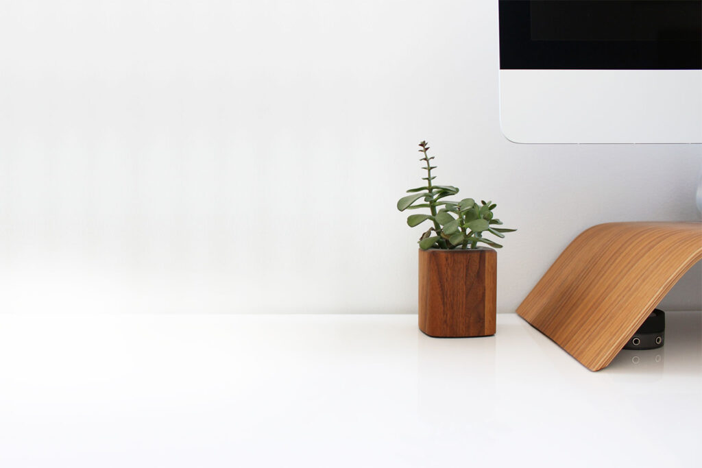

Finding simplicity in life
Life can getcomplicated really quickly but it doesn"t have to be! There are many ways to simplify your life a few of which we have explored in the past.This week we're taking a bit of a approach though, in how you can find simplicity life you are already living.
CONTINUE READING

jul 19 2022 | 3 comments